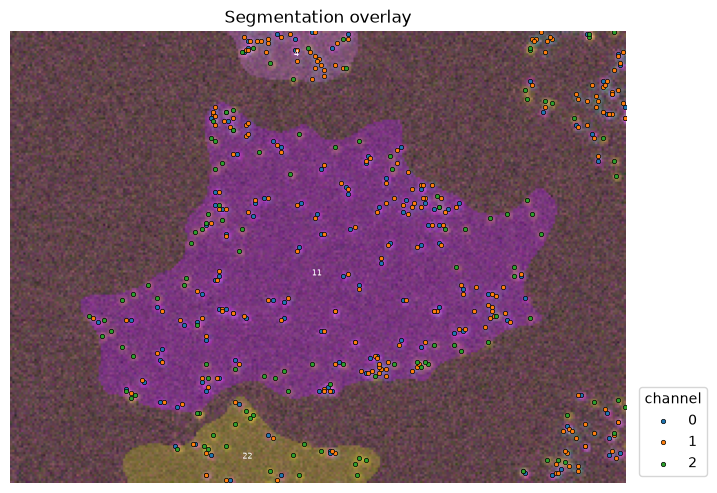
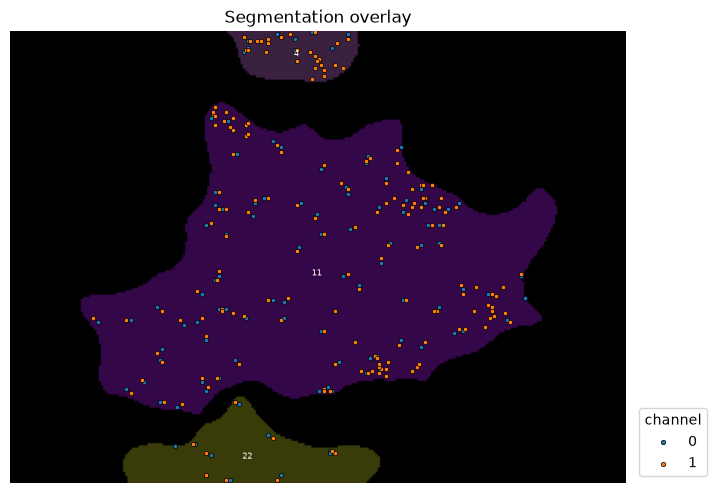
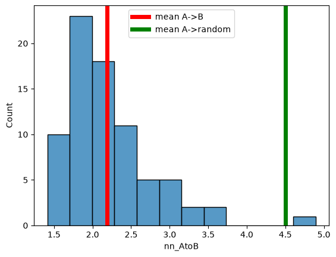
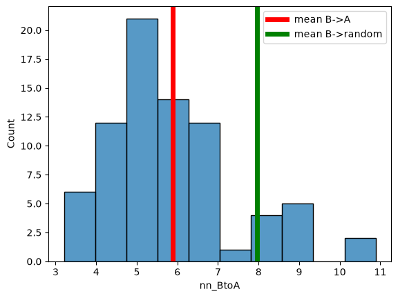
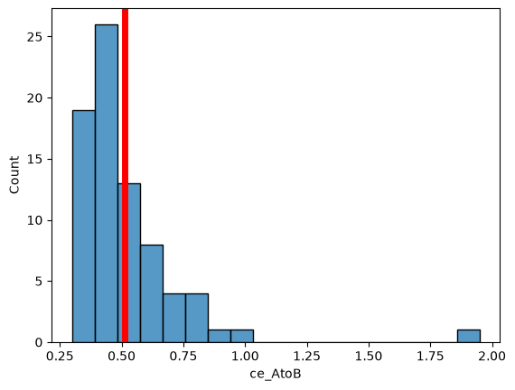
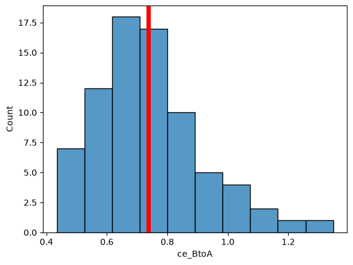

Notebook 2: Do two different protein clusters co-localize?#
# /// script
# requires-python = ">=3.10"
# dependencies = [
# "matplotlib",
# "numpy",
# "scikit-image",
# "scipy",
# "tifffile",
# "imagecodecs",
# "pandas",
# "seaborn",
# "bobiac_tools @ git+https://github.com/bobiac/bobiac-tools.git"
# ]
# ///
Overview#
In this notebook, we will learn how to assess whether two proteins co-localize.
Dataset#
Our data consists of fluorescence images with five channels:
Channel |
Staining |
Staining Description |
|---|---|---|
0 |
Hoechst |
Nuclear stain |
1 |
Phalloidin |
F-actin stain; whole cell marker |
2 |
Protein A |
Spot pattern |
3 |
Protein B |
Spot pattern |
4 |
Protein C |
Spot pattern |
The data for this exercise is the same as used for the classic segmentation, deep learning segmentation and spot detection exercises and can be downloaded here. From the previous segmentation exercises you should have a collection of labelled masks for the cells, and coordinates for spots. If not you can download them from here.
0. Importing libraries#
import matplotlib.pyplot as plt
import numpy as np
import pandas as pd
import seaborn as sns
import skimage
import tifffile
from bobiac_tools import overlay_labels
from scipy.spatial import KDTree
2. Load image, mask and spot table#
First, we load all the data that we will need for this notebook.
path_image = "../../../_static/images/quant/05_spatial_stats/images/F01_202.tif"
path_mask = "../../../_static/images/quant/05_spatial_stats/masks/F01_202w1.TIF"
path_spots = "../../../_static/images/quant/05_spatial_stats/spots/F01_202_spots.csv"
image = tifffile.imread(path_image)
mask = tifffile.imread(path_mask)
df_spots = pd.read_csv(path_spots)
mask = skimage.segmentation.clear_border(mask)
Visually inspect the images, masks and spots#
To be sure that the data we are working with is corrects, we visualise it here.
overlay_labels(image[2:, :, :])

(<Figure size 800x800 with 1 Axes>, <Axes: >)
overlay_labels(label_mask=mask, coordinates=df_spots)

(<Figure size 800x800 with 1 Axes>,
<Axes: title={'center': 'Segmentation overlay'}>)
Using the focus attribute in overlay we can zoom in to view single objects.
overlay_labels(
image=image[2:, :, :], label_mask=mask, coordinates=df_spots, focus_object=11
)

(<Figure size 800x587.05 with 1 Axes>,
<Axes: title={'center': 'Segmentation overlay'}>)
3. Make An Analysis Plan#
Question#
Do Protein A spots co-localize with Protein B spots?
Approach#
Answering this question is very similar to answering the question of if spots are clustered. Instead of finding nearest neighbours for each point within its own dataset, we find the nearest neighbours of points in dataset A to points in dataset B.
Workflow#
1. Generate a reference for comparison#
Randomly distributed set of points inside each cell’s cytoplasm. We will call this the random dataset, which we will compare to our protein datasets.
2. Measure the nearest neighbor distance#
For every spot in dataset A, identify the closest spot in dataset B and measure the distance.
3. Calculate the average nearest neighbour distance#
Average the two distances across all spots in the cell.
4. Calculate the Clark-Evans Index#
Calculate the ratio of the average A-B distance compared to the A-random distance. - Ratio = 1: Spots in dataset B and the spots in the random dataset are both distributed independently of spots in dataset A - Ratio < 1: Spots in dataset A co-localise with spots in dataset B - Ratio > 1: Spots in dataset A and B avoid each other
5. Calculate the p-value of the Clark-Evans Index#
Calculate the p-value using a comparison of multiple random patterns.
6. Calculate the reverse direction of comparison#
Measure the distance of every spot in dataset B to dataset A, then repeat the analysis. The two directions are not interchangeable. If set B is much denser than A, every A point will happen to be near some B point even at random, making A→B appear co-localized by chance. Measuring B→A guards against this: if B is merely dense everywhere rather than specifically clustering around A, most B points will still be far from A and the ratio will stay near 1. True mutual co-localization produces small ratios in both directions.
4. Assemble Datasets#
As before we generate a DataFrame that stores information about cells df_cell and another dataframe that stores information about spots df_spots. We then map the cell label to each spot which allows us to count how many spots exist inside each cell.
df_cell = pd.DataFrame(
skimage.measure.regionprops_table(mask, properties=["area", "label"])
)
# map the cell label to the spots
df_spots["label_cell"] = mask[df_spots["y"].astype(int), df_spots["x"].astype(int)]
# delete spots in the background
df_spots = df_spots.loc[df_spots["label_cell"] != 0]
# count number of spots per cell label
mapping_spots = (
df_spots.loc[df_spots["channel"] == 0]["label_cell"].value_counts().reset_index()
)
# add the cell count to the cell dataframe
df_cell = df_cell.merge(
mapping_spots, left_on="label", right_on="label_cell", how="inner"
).drop(columns="label_cell")
overlay_labels(label_mask=mask, df=df_cell, id_col="label", measurement_col="count")

(<Figure size 800x800 with 2 Axes>, <Axes: title={'center': 'count'}>)
Generate random point distribution#
As before, we focus on one cell to illustrate the principles. First, we need to generate two random set of points, one each as a random distribution of the points of protein A and B (same number of points).
cell_id = 11
overlay_labels(
label_mask=mask,
coordinates=df_spots.loc[df_spots["channel"].isin([0, 1])],
focus_object=cell_id,
)

(<Figure size 800x587.05 with 1 Axes>,
<Axes: title={'center': 'Segmentation overlay'}>)
# or use:
# from bobiac_tools import random_points_in_mask
def random_points_in_mask(mask: np.ndarray, cell_label: int, n: int) -> np.ndarray:
"""
Generate n random points uniformly distributed within a labeled cell region.
Points are placed continuously using rejection sampling:
candidate points are drawn uniformly from the bounding box of the cell and
accepted only if they fall within the cell mask. This correctly handles
irregular cell shapes and serves as a null model for Complete Spatial
Randomness (CSR).
Parameters
----------
mask : 2D numpy array
Label mask where each cell is identified by a unique integer ID
and background is 0.
cell_label : int
ID of the cell to sample within.
n : int
Number of random points to generate.
Returns
-------
points : (n, 2) numpy array
Random point coordinates in (row, col) / (y, x) order.
"""
ys, xs = np.where(mask == cell_label)
y_min, y_max = ys.min(), ys.max()
x_min, x_max = xs.min(), xs.max()
points = []
while len(points) < n:
y = np.random.uniform(y_min, y_max)
x = np.random.uniform(x_min, x_max)
if mask[int(round(y)), int(round(x))] == cell_label:
points.append([y, x])
return np.array(points)
spots_A = df_spots.loc[
(df_spots["channel"] == 0) & (df_spots["label_cell"] == cell_id)
][["y", "x"]].to_numpy()
spots_B = df_spots.loc[
(df_spots["channel"] == 1) & (df_spots["label_cell"] == cell_id)
][["y", "x"]].to_numpy()
n_A, n_B = spots_A.shape[0], spots_B.shape[0]
rnd_A = random_points_in_mask(mask, cell_label=cell_id, n=n_A)
rnd_B = random_points_in_mask(mask, cell_label=cell_id, n=n_B)
overlay_labels(
label_mask=mask, coordinates=[spots_A, spots_B, rnd_A, rnd_B], focus_object=cell_id
)
(<Figure size 800x587.05 with 1 Axes>,
<Axes: title={'center': 'Segmentation overlay'}>)
Note that channel 2, 3 in this overlay are the newly generated random distributions.
5. Calculate Nearest Neighbour Distances#
We calculate the nearest neighbour distances from
protein A spots to protein B spots
protein B spots to protein A spots
protein A spots to randomised B spots
protein B spots to randomised A spots
nn_AtoB = KDTree(spots_B).query(spots_A, k=1)[0].mean()
nn_BtoA = KDTree(spots_A).query(spots_B, k=1)[0].mean()
nn_ArndB = KDTree(rnd_B).query(spots_A, k=1)[0].mean()
nn_BrndA = KDTree(rnd_A).query(spots_B, k=1)[0].mean()
print("Mean NN dist. A->B:", nn_AtoB)
print("Mean NN dist. B->A:", nn_BtoA)
print("Mean NN dist. A->random(B):", nn_ArndB)
print("Mean NN dist. B->random(A):", nn_BrndA)
Mean NN dist. A->B: 1.9655708446943665
Mean NN dist. B->A: 3.207888882211614
Mean NN dist. A->random(B): 6.533843237525505
Mean NN dist. B->random(A): 7.5547308542865945
6. Calculate Clark-Evans Indices#
Now we can calculate our Clark-Evans indices.
ce_AB = nn_AtoB / nn_ArndB
ce_BA = nn_BtoA / nn_BrndA
print("Clark-Evans index A->B:", ce_AB)
print("Clark-Evans index B->A:", ce_BA)
Clark-Evans index A->B: 0.30082920162601984
Clark-Evans index B->A: 0.4246198764832821
7. Repeat Steps 4-6 with Multiple Random Patterns#
As before, we need to compare to multiple random patterns.
n_repeats = 100
sims_AtoB, sims_BtoA = [], []
for _ in range(n_repeats):
rnd_A = random_points_in_mask(mask, cell_label=cell_id, n=n_A)
rnd_B = random_points_in_mask(mask, cell_label=cell_id, n=n_B)
sims_AtoB.append(KDTree(rnd_B).query(spots_A, k=1)[0].mean())
sims_BtoA.append(KDTree(rnd_A).query(spots_B, k=1)[0].mean())
sims_AtoB = np.array(sims_AtoB)
sims_BtoA = np.array(sims_BtoA)
print("nn_AtoB", nn_AtoB)
print("nn_BtoA", nn_BtoA)
print("nn_random_AtoB", sims_AtoB.mean())
print("nn_random_BtoA", sims_BtoA.mean())
print("ce_AtoB", nn_AtoB / sims_AtoB.mean())
print("ce_BtoA", nn_BtoA / sims_BtoA.mean())
print("pval_AtoB", (sims_AtoB <= nn_AtoB).mean())
print("pval_BtoA", (sims_BtoA <= nn_BtoA).mean())
nn_AtoB 1.9655708446943665
nn_BtoA 3.207888882211614
nn_random_AtoB 5.96855103488785
nn_random_BtoA 7.628145474213061
ce_AtoB 0.32932127633743186
ce_BtoA 0.4205332597622685
pval_AtoB 0.0
pval_BtoA 0.0
8. Per-cell Colocalization Measurements#
✍️ Exercise: Summarise the per-cell co-localisation analysis as a function#
To make processing individual cells simpler, we can summarise our above analysis in a function called cross_nn.
The function should have the following features:
Parameters spots_A, spots_B : (n, 2) numpy arrays Spot coordinates in (row, col) / (y, x) order. mask : 2D numpy array Label mask where each cell is identified by a unique integer ID. cell_id : int ID of the cell in mask that both spot sets belong to. n_repeats : int Number of CSR simulations to run.
Returns dict with keys: nn_AtoB, nn_BtoA : float Observed mean cross-NN distance in each direction. nn_random_AtoB, nn_random_BtoA : float Mean of simulated cross-NN distances under CSR. ce_AtoB, ce_BtoA : float Cross Clark-Evans index (observed / random). < 1 indicates co-localization, > 1 indicates avoidance. pval_AtoB, pval_BtoA : float Fraction of simulations with cross-NN <= observed. Small values indicate significant co-localization.
# or use:
# from bobiac_tools import cross_nn
def cross_nn(
spots_A: np.ndarray,
spots_B: np.ndarray,
mask: np.ndarray,
cell_id: int,
n_repeats: int,
) -> dict[str, float]:
"""
Test whether two sets of spots are more co-localized than expected under
CSR using cross nearest-neighbor distances.
For each point in A, the nearest neighbor in B is found (and vice versa).
For the A→B direction, the null distribution holds A at its observed
positions and randomizes only B (and vice versa for B→A) — this tests
whether the *real* configuration of one set is closer to the other than
a same-sized random configuration would be, controlling for the
reference set's density without discarding the query set's real spatial
structure.
The two directions (A→B and B→A) can differ when the sets have different
sizes: a small set is always close to a large one even by chance.
Parameters
----------
spots_A, spots_B : (n, 2) numpy arrays
Spot coordinates in (row, col) / (y, x) order.
mask : 2D numpy array
Label mask where each cell is identified by a unique integer ID.
cell_id : int
ID of the cell in mask that both spot sets belong to.
n_repeats : int
Number of CSR simulations to run.
Returns
-------
dict with keys:
nn_AtoB, nn_BtoA : float
Observed mean cross-NN distance in each direction.
nn_random_AtoB, nn_random_BtoA : float
Mean of simulated cross-NN distances under CSR.
ce_AtoB, ce_BtoA : float
Cross Clark-Evans index (observed / random). < 1 indicates
co-localization, > 1 indicates avoidance.
pval_AtoB, pval_BtoA : float
Fraction of simulations with cross-NN <= observed.
Small values indicate significant co-localization.
"""
n_A, n_B = spots_A.shape[0], spots_B.shape[0]
# observed cross-NN distances
nn_AtoB = KDTree(spots_B).query(spots_A, k=1)[0].mean()
nn_BtoA = KDTree(spots_A).query(spots_B, k=1)[0].mean()
sims_AtoB, sims_BtoA = [], []
for _ in range(n_repeats):
rnd_A = random_points_in_mask(mask, cell_label=cell_id, n=n_A)
rnd_B = random_points_in_mask(mask, cell_label=cell_id, n=n_B)
sims_AtoB.append(KDTree(rnd_B).query(spots_A, k=1)[0].mean())
sims_BtoA.append(KDTree(rnd_A).query(spots_B, k=1)[0].mean())
sims_AtoB = np.array(sims_AtoB)
sims_BtoA = np.array(sims_BtoA)
return {
"nn_AtoB": nn_AtoB,
"nn_BtoA": nn_BtoA,
"nn_random_AtoB": sims_AtoB.mean(),
"nn_random_BtoA": sims_BtoA.mean(),
"ce_AtoB": nn_AtoB / sims_AtoB.mean(),
"ce_BtoA": nn_BtoA / sims_BtoA.mean(),
"pval_AtoB": (sims_AtoB <= nn_AtoB).mean(),
"pval_BtoA": (sims_BtoA <= nn_BtoA).mean(),
}
spots_A = df_spots.loc[
(df_spots["channel"] == 0) & (df_spots["label_cell"] == cell_id)
][["y", "x"]].to_numpy()
spots_B = df_spots.loc[
(df_spots["channel"] == 1) & (df_spots["label_cell"] == cell_id)
][["y", "x"]].to_numpy()
print(
cross_nn(spots_A=spots_A, spots_B=spots_B, mask=mask, cell_id=cell_id, n_repeats=10)
)
{'nn_AtoB': np.float64(1.9655708446943665), 'nn_BtoA': np.float64(3.207888882211614), 'nn_random_AtoB': np.float64(5.969043240707505), 'nn_random_BtoA': np.float64(7.704319012241365), 'ce_AtoB': np.float64(0.32929412058696855), 'ce_BtoA': np.float64(0.41637539633478454), 'pval_AtoB': np.float64(0.0), 'pval_BtoA': np.float64(0.0)}
Repeat measurements for all cells#
So far, we have focussed on one single cell. Of course, we need to analyse all cells.
n_repeats = 10
results = []
for cell_id in df_cell["label"].unique():
spots_A = df_spots.loc[
(df_spots["channel"] == 0) & (df_spots["label_cell"] == cell_id)
][["y", "x"]].to_numpy()
spots_B = df_spots.loc[
(df_spots["channel"] == 1) & (df_spots["label_cell"] == cell_id)
][["y", "x"]].to_numpy()
# calculate the NN distance, Clark-Evans index and p-value for that cell
results.append(
cross_nn(
spots_A=spots_A,
spots_B=spots_B,
mask=mask,
cell_id=cell_id,
n_repeats=n_repeats,
)
)
df_cell = pd.concat([df_cell, pd.DataFrame(results)], axis=1)
df_cell
| area | label | count | nn_AtoB | nn_BtoA | nn_random_AtoB | nn_random_BtoA | ce_AtoB | ce_BtoA | pval_AtoB | pval_BtoA | |
|---|---|---|---|---|---|---|---|---|---|---|---|
| 0 | 4669.0 | 2 | 23 | 1.742602 | 5.578599 | 4.691437 | 8.431806 | 0.371443 | 0.661614 | 0.0 | 0.0 |
| 1 | 7866.0 | 3 | 39 | 1.776632 | 3.954749 | 4.759385 | 7.483377 | 0.373290 | 0.528471 | 0.0 | 0.0 |
| 2 | 6945.0 | 4 | 34 | 1.764162 | 5.842747 | 4.767084 | 7.394651 | 0.370072 | 0.790131 | 0.0 | 0.0 |
| 3 | 9735.0 | 5 | 48 | 1.777044 | 4.682295 | 5.495804 | 7.076684 | 0.323346 | 0.661651 | 0.0 | 0.0 |
| 4 | 7749.0 | 6 | 38 | 1.730490 | 6.242496 | 5.106933 | 8.331586 | 0.338851 | 0.749257 | 0.0 | 0.0 |
| ... | ... | ... | ... | ... | ... | ... | ... | ... | ... | ... | ... |
| 72 | 9504.0 | 80 | 47 | 1.715710 | 3.593778 | 5.206823 | 7.209218 | 0.329512 | 0.498498 | 0.0 | 0.0 |
| 73 | 2878.0 | 81 | 14 | 1.504764 | 7.685147 | 3.496796 | 7.448302 | 0.430326 | 1.031798 | 0.0 | 0.5 |
| 74 | 1881.0 | 83 | 9 | 2.093022 | 10.883218 | 3.069716 | 8.071630 | 0.681829 | 1.348330 | 0.0 | 1.0 |
| 75 | 4198.0 | 85 | 20 | 1.648309 | 6.056318 | 4.342187 | 8.007327 | 0.379603 | 0.756347 | 0.0 | 0.0 |
| 76 | 441.0 | 90 | 2 | 1.414214 | 7.920230 | 1.547311 | 8.323545 | 0.913982 | 0.951545 | 0.3 | 0.6 |
77 rows × 11 columns
sns.histplot(
df_cell,
x="nn_AtoB",
)
plt.axvline(df_cell["nn_AtoB"].mean(), c="red", lw=5, label="mean A->B")
plt.axvline(df_cell["nn_random_AtoB"].mean(), c="green", lw=5, label="mean A->random")
plt.legend()
<matplotlib.legend.Legend at 0x7f22ba144fb0>

sns.histplot(
df_cell,
x="nn_BtoA",
)
plt.axvline(df_cell["nn_BtoA"].mean(), c="red", lw=5, label="mean B->A")
plt.axvline(df_cell["nn_random_BtoA"].mean(), c="green", lw=5, label="mean B->random")
plt.legend()
<matplotlib.legend.Legend at 0x7f22ba0126f0>

sns.histplot(
df_cell,
x="ce_AtoB",
)
plt.axvline(df_cell["ce_AtoB"].mean(), c="red", lw=5)
<matplotlib.lines.Line2D at 0x7f22ba35ec60>

sns.histplot(
df_cell,
x="ce_BtoA",
)
plt.axvline(df_cell["ce_BtoA"].mean(), c="red", lw=5)
<matplotlib.lines.Line2D at 0x7f22ba394080>

Interpretation: Almost all of protein A associates with protein B but not vice versa.
Conclusion#
Here we have learned how to assess if two point patterns co-localise more than expected by random chance. Note that:
The distance metric (distance to nearest neighbor) was a choice and could have been replaced with e.g. distance to the k nearest neighbors, number of spots in a certain radius or others.
Using a complete spatially random pattern as null distribution was a choice. We could have e.g. randomised the labels between A and B.
The formalism used to define spatial relationships (KDTree) was a choice. Other options exist.
All these choices need to be made with your scientific question in mind.
Moreover, other techniques for assessing co-localisation exist such as:
Spatial cross-correlation: Takes into account expression levels
Ripleys L for cross correlation: Reports on clustering length scales